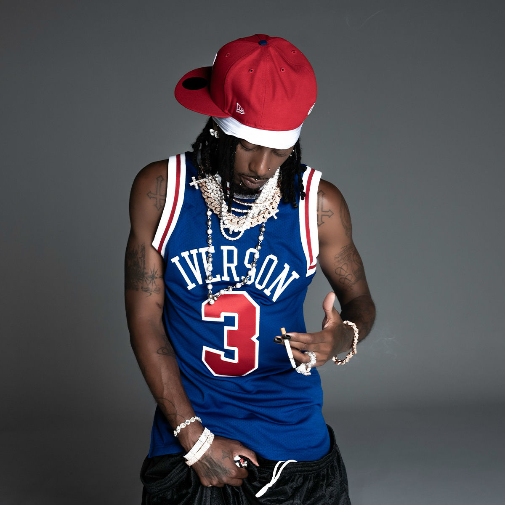
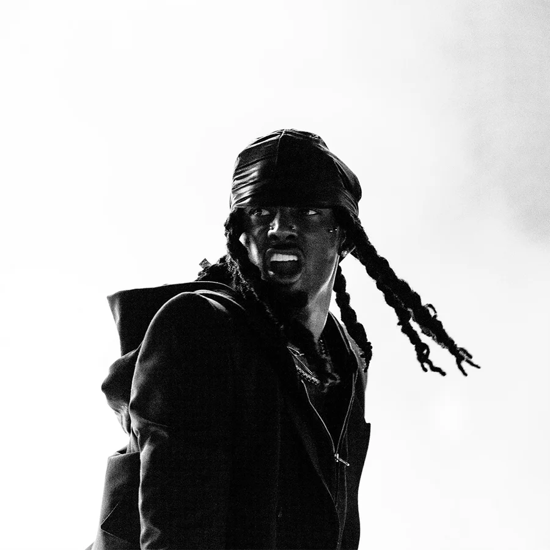
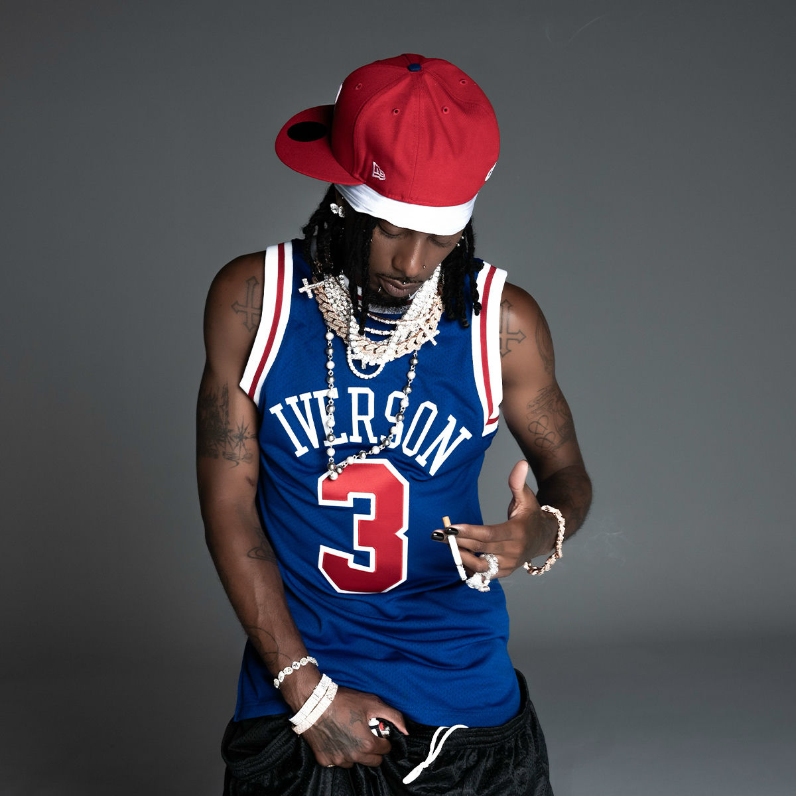
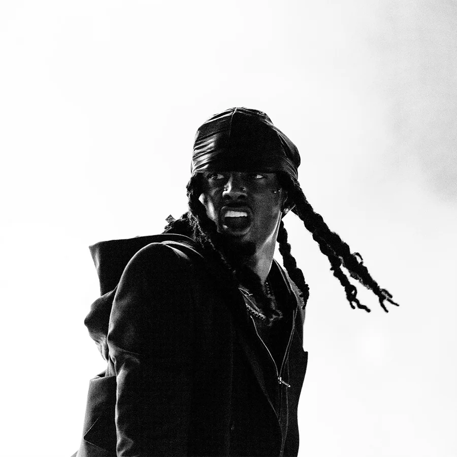
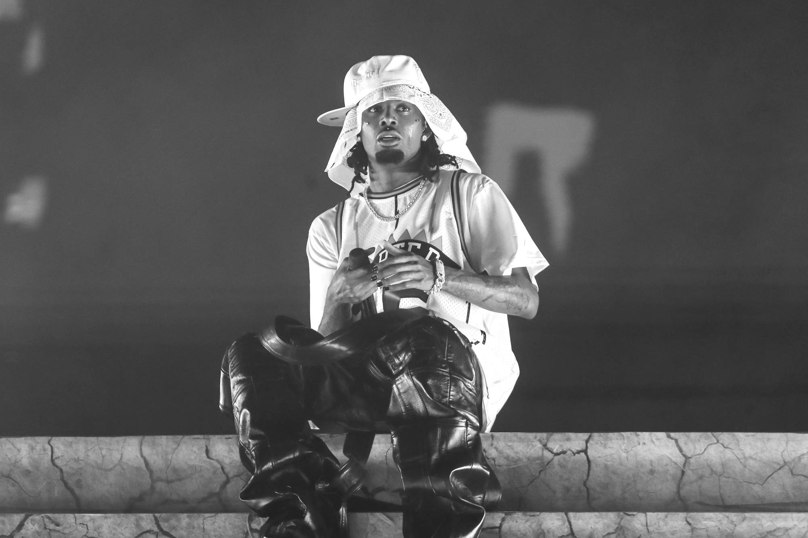
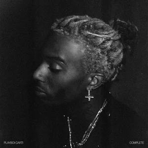
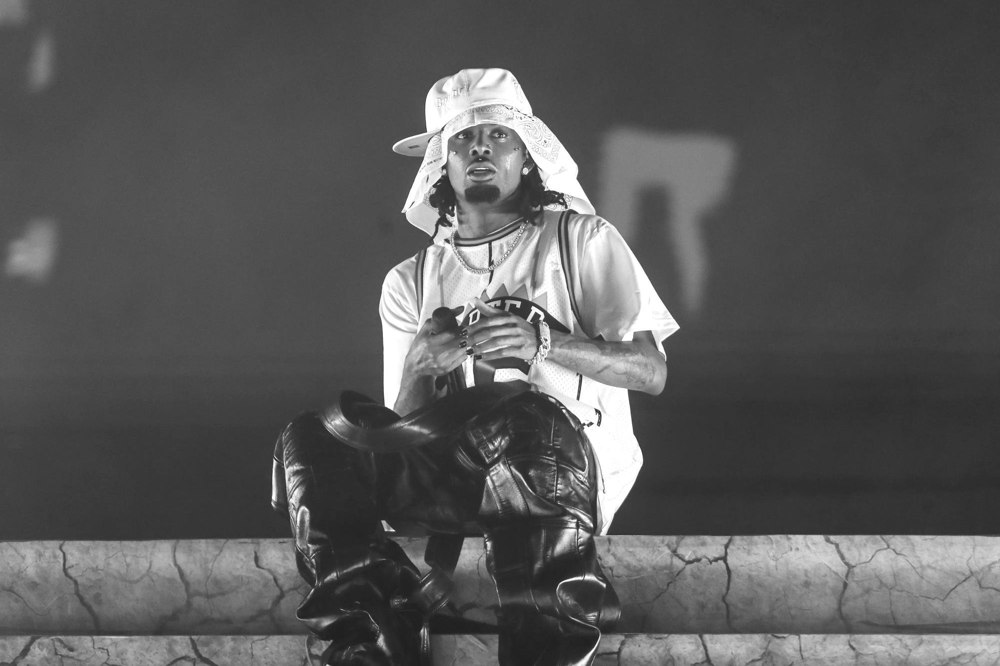
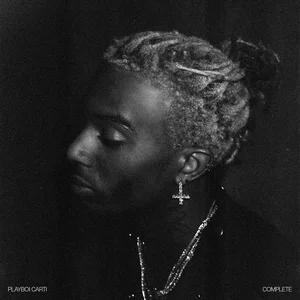
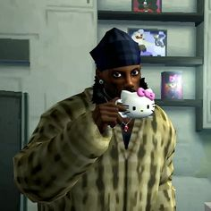
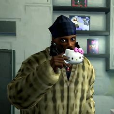

Биография
Playboi Carti — американский рэпер, продюсер и культурный феномен новой волны хип-хопа. Его музыка разрушает классические каноны жанра, делая ставку на атмосферу, эмоции и эстетику.
Playboi Carti (настоящее имя — Джордан Террелл Картер) родился 13 сентября 1996 года в Атланте, штат Джорджия. Атланта является одним из главных центров американского трэпа, и именно эта среда оказала решающее влияние на формирование его музыкального вкуса, мировоззрения и художественного подхода.
В детстве Картер рос в обычной семье и, как многие подростки, мечтал о спортивной карьере. Он серьёзно занимался баскетболом и рассматривал возможность профессионального спорта, однако со временем интерес к музыке стал доминирующим. Его привлекала не только сама музыка, но и стиль, визуальная подача, образ артиста и влияние на культуру.
Первые музыкальные шаги Carti сделал под псевдонимом Sir Cartier. В этот период он активно экспериментировал со звучанием, вдохновляясь южным рэпом, андеграундной сценой и ранними работами таких артистов, как Gucci Mane, Lil Wayne и Future. Уже тогда в его треках можно было заметить стремление уйти от традиционного повествовательного рэпа в сторону настроения и ритма.
В отличие от классических исполнителей, Playboi Carti редко делает акцент на сложной лирике. Его музыка строится на повторяющихся фразах, ад-либах, мелодичном голосе и минималистичных битах. Такой подход долгое время вызывал споры, однако именно он стал ключевой особенностью его стиля и впоследствии оказал влияние на целое поколение артистов.
Прорыв в карьере произошёл в 2015 году, когда треки «Broke Boi» и «Fetti» начали набирать популярность на платформе SoundCloud. Эти композиции быстро разошлись по интернету, сделав Carti заметной фигурой на андеграундной сцене. Его нестандартная подача и харизматичный образ привлекли внимание как слушателей, так и представителей музыкальной индустрии.
Вскоре Playboi Carti познакомился с участниками творческого объединения A$AP Mob, включая A$AP Rocky, что стало важным этапом в его развитии. Участие в этом коллективе позволило ему не только расширить аудиторию, но и углубить эксперименты с визуальным стилем, модой и сценическим образом.
В 2017 году вышел одноимённый микстейп Playboi Carti, который получил положительные отзывы критиков и закрепил за артистом статус одного из самых перспективных рэперов своего поколения. Композиции с этого релиза активно использовались в интернете и стали частью культуры SoundCloud-эры.
Альбом Die Lit (2018) стал следующим шагом в эволюции Carti. Проект отличался ещё большей минималистичностью, акцентом на энергию и живые выступления. Многие треки с альбома стали культовыми и до сих пор считаются основой его дискографии.
Настоящим поворотным моментом стал релиз Whole Lotta Red в 2020 году. Альбом вызвал резонанс и разделил аудиторию: одни не приняли радикальное звучание, другие увидели в нём революцию. Со временем проект был переосмыслен и получил статус культового, оказав огромное влияние на альтернативный трэп и экспериментальный рэп.
Помимо музыки, Playboi Carti известен своим вкладом в моду и визуальную культуру. Его стиль, вдохновлённый панком, готикой и авангардом, стал важной частью его образа. Он часто сотрудничает с дизайнерскими брендами и задаёт тренды в молодёжной среде.
Сегодня Playboi Carti воспринимается не просто как рэпер, а как художественный образ и культурное явление. Его творчество продолжает развиваться, а влияние распространяется далеко за пределы музыки, формируя эстетику и звучание нового поколения артистов.
Галерея
 



 



 

Дискография
Playboi Carti (2017)
- 01 Location
- 02 Lookin (Feat. Lil Uzi Vert)
- 03 Wake Up Like This (Feat. Lil Uzi Vert)
- 04 Let It Go
- 05 Half & Half
- 06 New Choppa (Feat. A$AP Rocky)
- 07 Other Shit
- 08 No. 9
- 09 Do That Shit!
- 10 Magnolia
- 11 Lame Niggaz
- 12 Flex
- 13 Yah Mean
- 14 Kelly K
- 15 Had 2
Нажмите на трек чтобы открыть в Spotify
Die Lit (2018)
- 01 Long Time (Intro)
- 02 R.I.P.
- 03 Lean 4 Real (Feat. Skepta)
- 04 Old Money
- 05 Love Hurts (Feat. Travis Scott)
- 06 Right Now
- 07 Home (KOD)
- 08 Fell In Luv (Feat. Bryson Tiller)
- 09 Foreign
- 10 Shoota (Feat. Lil Uzi Vert)
- 11 Poke It Out (Feat. Nicki Minaj)
- 12 FlatBed Freestyle
- 13 Pull Up
- 14 Mileage (Feat. Chief Keef)
- 15 No Time (Feat. Gunna)
- 16 Middle Of The Summer
- 17 Choppa Won't Miss (Feat. Young Thug)
- 18 R.I.P. Fredo (Notice Me) (Feat. Young Nudy)
- 19 Top
Нажмите на трек чтобы открыть в Spotify
Whole Lotta Red (2020)
- 01 Rockstar Made
- 02 Go2DaMoon (Feat. Kanye West)
- 03 Stop Breathing
- 04 Beno!
- 05 M3tamorphosis (Feat. Kid Cudi)
- 06 Slay3r
- 07 No Sl33p
- 08 New Tank
- 09 @ MEH
- 10 Vamp Anthem
- 11 New N3on
- 12 Control
- 13 On That Time
- 14 Punk Monk
- 15 King Vamp
- 16 Place
- 17 Sky
- 18 Over
- 19 I Love U I Hate U
- 20 Die 4 Guy
- 21 Not Playing
- 22 F33l Lik3 Dyin
Нажмите на трек чтобы открыть в Spotify